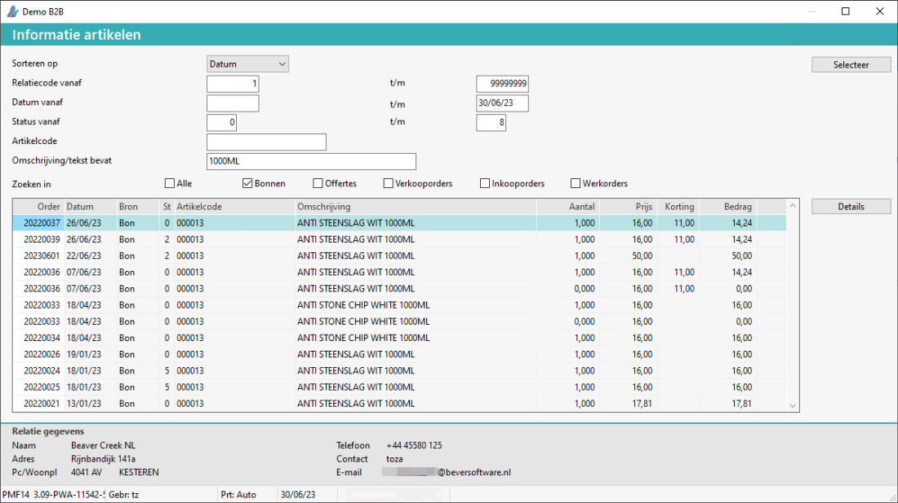

Om informatie te zoeken in de artikel-, bon- of (verkoop)order omschrijving(en), doorloopt u de volgende stappen:
Ga naar Informatie artikelen (ABI).
Geef een selectie op:
Relatiecode, datum vanaf, status of artikelcode.
Geef de omschrijving / tekst bevat in.
Bij Zoeken in selecteer Alle of maak een andere selectie.
Kies voor de knop Selecteer.

Indien aanwezig, worden de artikelgegevens weergegeven.
Selecteer de regel.
De bon details worden weergeven, zie ook:
Opmerking: In de uitgebreide tekst-velden wordt er ook gezocht.
Gerelateerde onderwerpen
Copyright ©